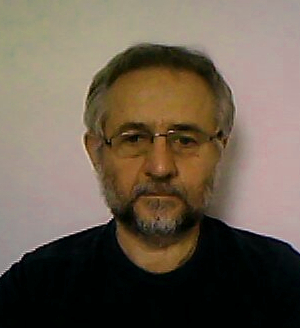
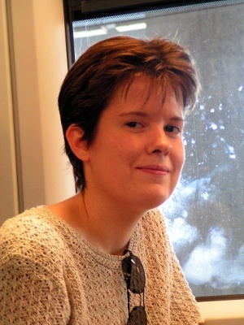
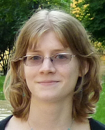

SPEX tagok
Szabó Róbert (PI)
KASC Working Group vezető, előkészítő munkák, Cefeidák, RR Lyrae csillagok, hidrodinamikai modellezés, oscillations in stellar clusters, delta Sct és gamma Dor csillagok, B-csillagok
Kiss L. László
KASC Working Group vezető, Mira és félszabályos csillagok, Cefeidák, Lendület csoport vezető
Benkő M. József
RR Lyrae csillagok, Cefeidák, földfeszíni megfigyelések, előkészítő munkák
Molnár László
Hidrodnamikai modellezés, RR Lyrae csillagok
Paparó Margit
fehér törpék, delta Scuti csillagok

Nuspl János
Fedési kettőscsillagok, földfelszíni megfigyelés, előkészítő munkák
Szabados László
Cefeidák
Plachy Emese
RR Lyrae csillagok, káosz
Klagyivik Péter
GAIA project, űrfotometria
Marek Skarka
hibrid fősorozati pulzátorok, RR Lyrae csillagok
Sódor Ádám
RR Lyrae csillagok, Blazhko effektus, csillaglégkörök, fénygörbe analízis

Sódorné Bognár Zsófia
Pulzáló fehér törpe csillagok asztroszeizmológiája, változócsillagok fotometriája, CCD photometria és adatfeldolgozás

Dobos Vera
Exobolygók, exoholdak, lakhatóság, lakhatósági zónák, asztrobiológia
Hallgatók
Dálya Gergely (ELTE)
Hanyecz Ottó (ELTE)
Juhász Áron (ELTE)
Együttműködő munkatársak
Kolláth Zoltán
(University of West Hungary, Savaria Campus, Institute of Mathematics and Physics, Hungary)
Hidrodinamikai modellezés, RR Lyrae csillagok, Cefeidák, ismeretterjesztés
Szabó M. Gyula
(Gothard Astrophysical Observatory, Szombathely, Hungary)
Cefeidák, Mira és félszabályos változócsillagok, statisztikai vizsgálatok, exobolygók
Derekas Aliz
(Gothard Astrophysical Observatory, Szombathely, Hungary)
Fedési kettőscsillagok, RR Lyrae csillagok, Cefeidák, delta Scuti csillagok, spektroszkópia
Jurkovic Mónika
(Astronomical Observatory of Belgrade, Serbia)
II-es típusú cefeidák
Borkovits Tamás
(Baja Astronomical Observatory, Baja, Hungary)
kettőscsillagok, égi mechanika
Bíró I. Barna
(Baja Astronomical Observatory, Baja, Hungary)
kettőscsillagok, eclipse mapping
Kovács József
(Gothard Astrophysical Observatory, Szombathely, Hungary)
spektroszkópiai megfigyelések
Korábbi tagok
Szulágyi Judit
adatfeldolgozás
Dékány István
földfelszíni megfigyelések, adatfeldolgozás
Fűrész Gábor
spektroszkópia